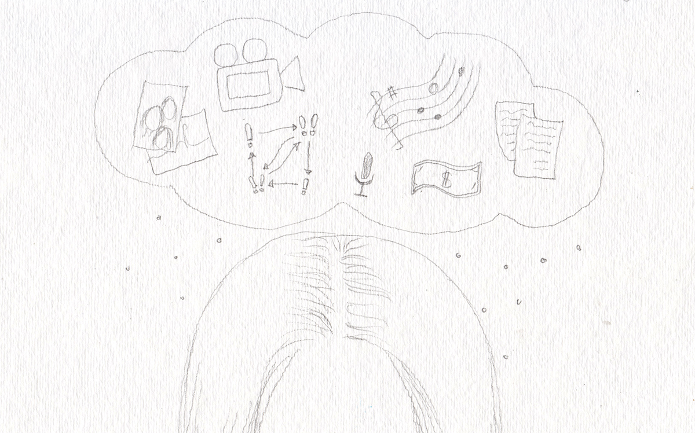

My partner has unwanted access to my online accounts.
Your online accounts are intimate extensions of your life. Your social media accounts collect your friendships, your family, and your hobbies. Your bank accounts manage your financial resources. Accessing your healthcare online is instrumental to your physical and mental health. While logging into a website may seem natural and mundane, it's a deeply personal action that safeguards your privacy.
When your partner knows your login credentials, you risk a loss of autonomy. Your behavior changes: you might not message a friend because it could upset your partner. You may adjust your spending habits, fearing disapproval. If you're seeking sensitive healthcare, like counseling or reproductive healthcare, your decisions could be questioned. In healthy relationships, online accounts are shared with mutual respect for privacy. You only give what feels comfortable, and your partner does not push for more. In coercive relationships, online accounts are surrounded by feelings of jealousy, suspicion, guilt, and insecurity. There is a lack of trust.
Securing your online accounts defends the most intimate details of your life while asserting your autonomy. We will discuss different strategies for protecting your accounts based on your safety and comfort.
Defense Strategies
Cybersecurity can be as simple as changing a password. If you suspect your partner is secretly recording your computer activity, we suggest reading our guide My partner is monitoring my computer or cell phone activity before following these strategies.
Change your passwords
 To secure an online account, change the password to a unique phrase or code that only you would know. Visit your website and look in your account or settings page for the option to set a new password.
To secure an online account, change the password to a unique phrase or code that only you would know. Visit your website and look in your account or settings page for the option to set a new password.
When setting a new password, don't use any words or phrases your partner could guess. Random combinations of words, such as "PurpleDishwasherPotato", are easily remembered and very difficult to hack. It's especially important that you don't re-use a password from another account. If you're changing a lot of a passwords, we strongly recommend using the PASSWORD MANAGER strategy. A password manager generates and stores passwords for you, so you do not have to remember them. This makes it nearly impossible for a partner to guess your password. It's also much safer than writing passwords in a document, or on a piece of paper.
For even more security, use the TWO-FACTOR AUTHENTICATION strategy as well. When you login to an account, you must provide a code generated by your phone or received in a text. Even if your partner has your password, they would still need your cell phone to access your account.
Create backups of your important data
Your partner may interfere with your online accounts: deleting emails, erasing photos, or unfriending people on social media. If this data is important, and you don't feel comfortable removing access from your partner, create backups of your data. Make sure you secure your cloud account too.
For emails, create a forwarding address so every incoming email is sent to an additional email address that your partner doesn't have access to. You also have options to download emails to your computer. This guide by Lifehacker explores offline email options in depth.
For texts, enable text-forwarding, where your texts are saved on another device: possibly a friend or family member's phone. Check the settings of your texting app and find the forwarding option if its available. Alternatively, take screenshots of important conversations and store them in a safe place.
On social media, you can download years of activity, including posts, messages, and photos. This is available on Facebook and Twitter, usually buried in your settings page. Other social media services may not have this option, in which case you should manually download photos and take screenshots of important conversations .
Create secret accounts
If you're unable to secure your online accounts, create new accounts that your partner is unaware of. When you register online, use a totally new password, email address, and login name—it's important that your partner be unfamiliar with your login credentials. For a greater degree of privacy, use a private browsing window so your web history isn't recorded. You can also use a Library or work computer.
Conclusion
TO-DO.